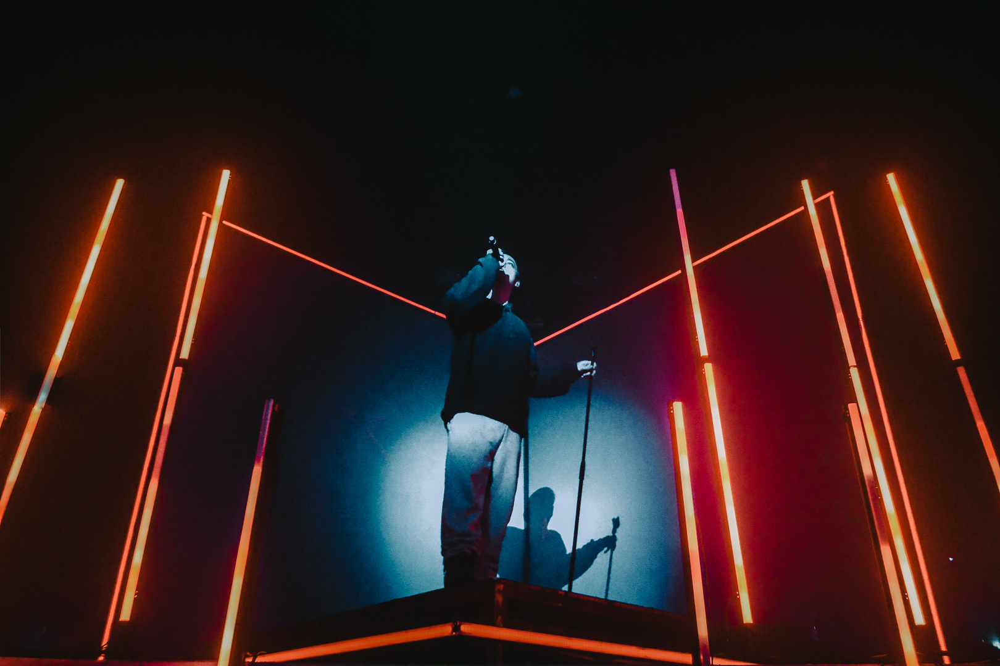

My name is Uber Magaña Pineda; I am the younger brother of two sisters and a brother. I was born on November 22, 2008 in Anaheim, California: and I have lived here for the last 12 years. I value my family, my education and myself very much. I say this because those 3 things make me happy. Other things that make me happy are skating, exercising and listening/playing music. Computing is another thing that makes me happy and stresses me out at the same time, just like music. When I have a problem or feel a little weak mentally and emotionally, I like to exercise and skate while listening to music. These things free my mind because I put all my focus on them, the gym has helped me a lot in the last 3 years. Same with my skateboard, the last 3 years have been the most I have used my skateboard and it has helped me a lot in my life.
Interests
Computer Science
I have liked computer science for a long time, I have always had a thing for technology. I learned about the wonders of technology because of my older brother when i was in 5th. In my life I have worked on a couple of projects, feel free to explore some of them:
Skating

I love to skate in my free time and any time i can. I have been skating for around 3 years although I have had knowledge of a skateboard for basically my entire life. Ever since I first started riding a skateboard I knew it would be hard, though I always push through and manage to pick myself back up. When I ride my skateboard I feel free and unlimited with the things I can do and learn from it.
Music & Guitar
Music has been a big thing for me my entire life, mainly because my dad has been in a band for my entire life and always would practice or play music in my house. I have played in my dads band for around 5 years, but I have been playing the guitar for over a decade; I own a sundry of guitars at the moment, my main being an red electric guitar: Epiphone SG. I have learned a myriad of things about music production in my life that I would like to make my own band or label to record music in the future.
Video Games

I dabble in video games every once in a while when I don't have anything to do. I never really prioritized playing videogames in life, I use videogames as a last resort of entertainment; I like enjoying the visuals of games, how smooth they run and how the gameplay and story work. I would like to make some of my own games in the future that is why I pay attention to the small details of games and I don't spend much time playing them, but instead I inspect them for each little detail that has an effect on the user experience.
Friends

I enjoy spending time with my friends, although I also enjoy my alone time. My closest friends are what we like to call "Los Pibes" who's name was given to by me in march of freshman year, they are my closest friends and we all know eachother very well. Some of my favorite memories are with Los Pibes; when we went to the gym, when we hung out on school feild trips, eating at Los Pibes chicken, and when we went to stores.